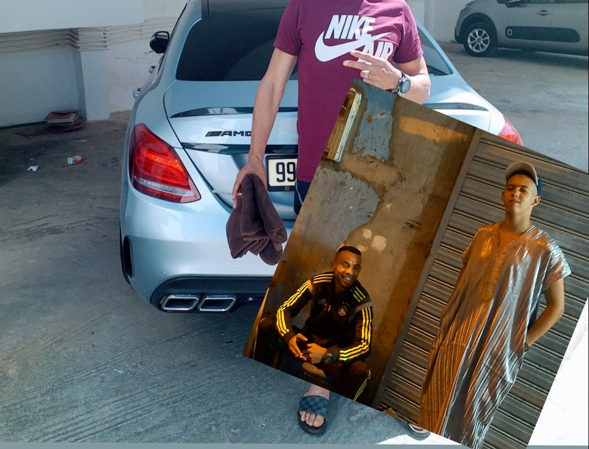
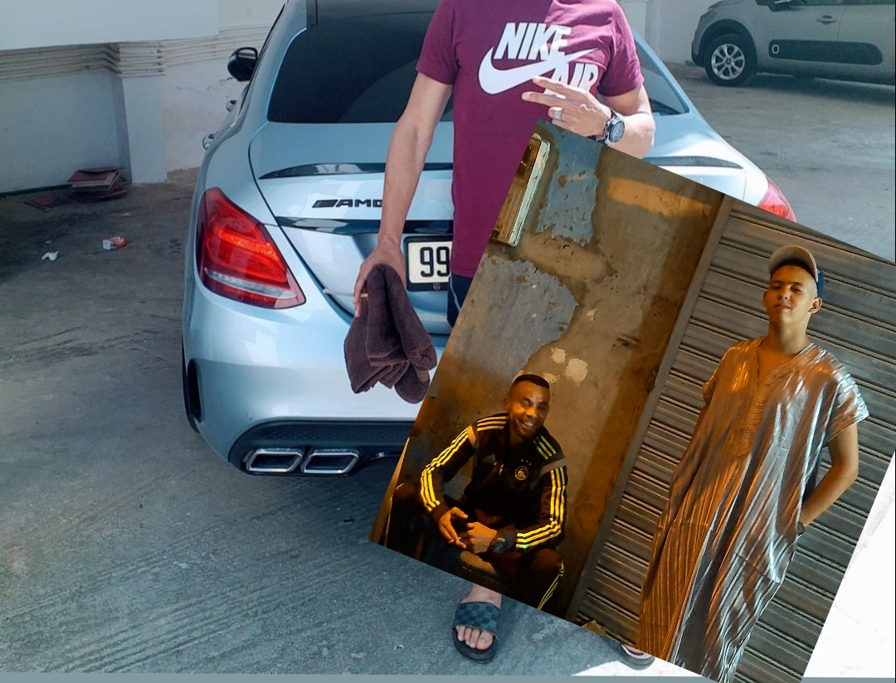

Welkom op mijn pagina ik ben Anass en een front-end developer.
Aangenaam ,
ik ben Anass Misri geboren op 26, augustus 2002,In Amsterdam.
Ik ben bezig met de opleiding applicatie ontwikkelaar op het ROC Van Amsterdam,
locatie Amstelland.
Wat ik wil in de ICT, is projectleider worden in de IT,
door middel op de hbo de opleiding te kiezen It business and management.